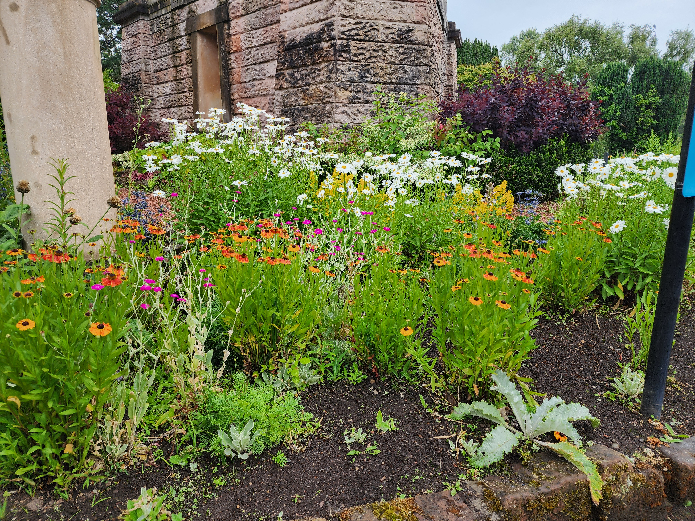
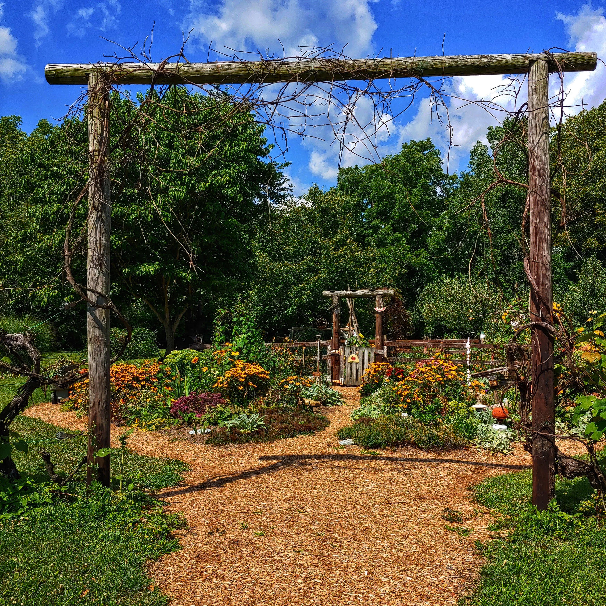
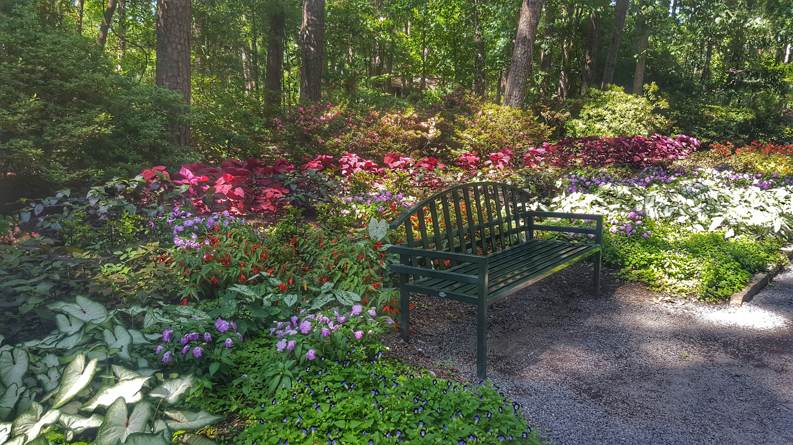

Layered Garden Borders
Combine evergreen shrubs, flowering perennials, and ornamental grasses at different heights to create depth and year-round interest.
Beautiful landscapes you can create yourself.
Beautiful landscapes usually combine strong structure, thoughtful plant choices, and a few simple design principles. Use these ideas as a starting point for your own yard.

Combine evergreen shrubs, flowering perennials, and ornamental grasses at different heights to create depth and year-round interest.

Gravel, brick, stepping stones, and natural stone can help connect different areas of the yard while adding character to the landscape.

Treat a patio like an outdoor room. Use plants, hedges, containers, or trellises to create boundaries and make the space feel cozy and intentional.

Simple foundation plantings, repeated shrubs, a defined walkway, and one or two focal plants can transform the appearance of a home's entrance. Start by planting the large foundation trees and shrubs, then fill in with smaller plants and flowers.